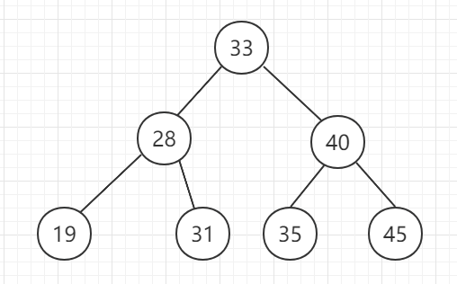
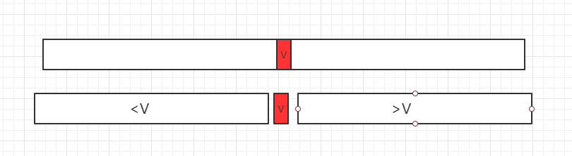

二分探索木
一、概念とその紹介
二分探索木（英語：Binary Search Tree）は、二叉探索木、二分検索木、順序付き二分木、またはソート済み二分木とも呼ばれます。以下のいくつかの条件を満たします：
- 左の部分木が空でない場合、左の部分木のすべてのノードの値はそのルートノードより小さくなります。
- 右の部分木が空でない場合、右の部分木のすべてのノードの値はそのルートノードより大きくなります。
その左および右の部分木もまた二分探索木です。
下図に示すとおりです：

二、適用説明
二分探索木は効率的な挿入、削除、検索操作を備えています。
平均時間の時間計算量はO(log n)、最悪の場合はO(n)。二分探索木はヒープと異なり、必ずしも完全二分木ではなく、基盤となる構造を配列で直接表現しにくいため、連結リストを用いて二分探索木を実装します。
| 要素の検索 | 要素の挿入 | 要素の削除 | |
|---|---|---|---|
| 通常の配列 | O(n) | O(n) | O(n) |
| 順序配列 | O(logn) | O(n) | O(n) |
| 二分探索木 | O(logn) | O(logn) | O(logn) |
以下では、まず配列形式の二分探索法を考え方の参考として紹介し、その後で二分探索木の探索方法について紹介します。
三、二分探索法のプロセス図解
二分探索法の考え方は1946年に提唱されました。探索問題はコンピュータにおいて非常に重要な基礎的問題です。順序付けられた数列に対してのみ、二分探索法を使用できます。ある要素を探索する場合、まず配列の中央の値Vと探索対象データとの大小関係を確認し、次の3つのケースに分けます：
- 1、探索対象のデータと等しい場合、直接見つかる
- 2、Vより小さい場合、Vより小さい部分に分けて検索を続けます
- 2、Vより大きい場合、Vより大きい部分に分けて検索を続けます

四、Javaサンプルコード
ソースコードパッケージのダウンロード：Download
src/runoob/binary/BinarySearch.java ファイルのコード：
package runoob.binarySearch;
/**
* 二分探索法
*/
public class BinarySearch {
// 二分探索法、ソート済み配列arr内でtargetを探索する
// targetが見つかった場合、対応するインデックスindexを返す
// targetが見つからない場合、-1を返す
public static int find(Comparable[] arr, Comparable target) {
// arr[l...r]の範囲内でtargetを探索する
int l = 0, r = arr.length-1;
while( l <= r ){
//int mid = (l + r)/2;
// 極端な場合の整数オーバーフローを防ぐため、以下のロジックを使用してmidを求める
int mid = l + (r-l)/2;
if( arr[mid].compareTo(target) == 0 )
return mid;
if( arr[mid].compareTo(target) > 0 )
r = mid - 1;
else
l = mid + 1;
}
return -1;
}
}
/**
* 二分探索法
*/
public class BinarySearch {
// 二分探索法、ソート済み配列arr内でtargetを探索する
// targetが見つかった場合、対応するインデックスindexを返す
// targetが見つからない場合、-1を返す
public static int find(Comparable[] arr, Comparable target) {
// arr[l...r]の範囲内でtargetを探索する
int l = 0, r = arr.length-1;
while( l <= r ){
//int mid = (l + r)/2;
// 極端な場合の整数オーバーフローを防ぐため、以下のロジックを使用してmidを求める
int mid = l + (r-l)/2;
if( arr[mid].compareTo(target) == 0 )
return mid;
if( arr[mid].compareTo(target) > 0 )
r = mid - 1;
else
l = mid + 1;
}
return -1;
}
}